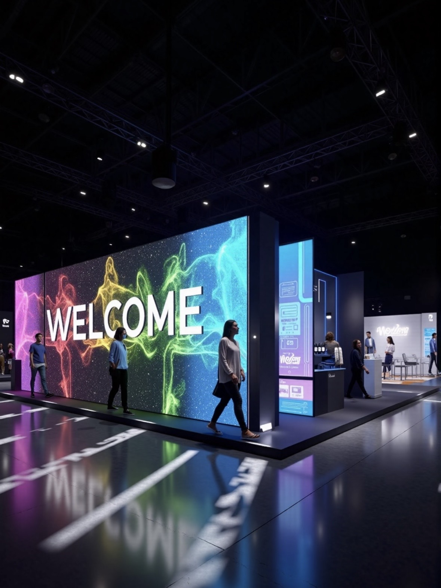

By Cassie
A broadcast LED wall is unusual among display projects because its performance is judged by a camera rather than by an eye. A panel that looks flawless to everyone in the studio can still fail on air, producing banding, moire patterns or a colour temperature that does not match the rest of the scene. Virtual production raises the standard again, because the wall becomes the light source as well as the background, and everything downstream of the camera depends on the wall being accurate and stable.
That makes studio projects a specification exercise rather than a purchase. The buyer has to think about refresh relative to the camera shutter, grayscale depth in the darkest parts of the image, colour calibration targets, latency through the render pipeline, and cooling noise on a live set. This guide covers what drives demand for broadcast and virtual production LED, the specifications that decide whether a wall works on camera, and the questions production and engineering teams ask before committing.
The dominant driver is the economics of location shooting. A virtual production stage removes the need to move a cast and crew to a distant location, which saves travel, permits, weather delays and the cost of returning to a location when the light is wrong. A production can shoot a sunset at any hour and hold it steady for as long as the schedule requires, and it can capture a background plate and the foreground performance in the same camera pass. The savings on a single production can be substantial, which is why stages have been built in cities that previously had no production infrastructure at all.
The second driver is streaming volume. The number of scripted productions being made has grown faster than the number of suitable stages, and much of that content is produced on schedules that cannot absorb weather risk. In-camera visual effects give a production a controlled environment without giving up the look of an exterior. News and current affairs studios have moved in the same direction for a different reason: a single wall can be reconfigured per programme, so a broadcaster no longer needs a physical set for every show in the schedule.
Technical capability has also crossed a threshold. Panels now offer refresh rates high enough to stay clean at high frame rates and with modern shutter angles, grayscale depth sufficient to hold detail in near-black areas of the image, and colour performance that can be calibrated to the standards a production is grading to. Just as importantly, cameras and tracking systems can now reconcile their position with the rendered content fast enough that the background holds register with the physical set.
Finally, studios are choosing LED over green screen for reasons that are practical rather than fashionable. On a lit LED stage the actors can see the environment they are supposed to be in, which changes performance quality, and the lighting on the talent is physically correct because it comes from the wall. That removes a large amount of the colour matching work that green screen requires in a heavy visual effects pipeline.
Refresh rate is the first number to pin down, because it is the one that produces a visible failure on air. A panel that refreshes at a rate that beats against the camera shutter produces banding that cannot be fixed in post, so studio walls are specified well above the general-purpose threshold. Grayscale depth matters in the opposite direction, in the dark areas of an image that a camera will otherwise render as flat black with visible steps.
Colour and physical construction follow. The wall has to be calibratable to the standard the production grades to, and it has to hold that calibration across a shooting day. Cabinet depth and mounting tolerance matter because a virtual production volume is often built as a curve or corner, and both performance and camera tracking depend on the panels being flat and true where they meet. Cooling is a casting consideration as much as an engineering one: any noise on a live set ends up in the audio take.
| Application | Series | Cabinet Size | Key Specs | Best Use |
|---|---|---|---|---|
| Virtual Production Volume | Z Series COB P1.9 | 500 x 500 mm | High refresh, 10000:1, precise cabinet tolerance | In-camera VFX, LED volumes |
| TV News Studio Wall | CV-PRO COB P1.5 | 600 x 337.5 mm | 3840 Hz and above, individually calibrated | News, sport, current affairs |
| Chroma Replacement Set | CV-PRO COB P2.6 | 500 x 500 mm | High refresh, low latency, uniform colour | Set extension and studio backgrounds |
| Weather and Data Wall | M-PRO P1.9 | 600 x 337.5 mm | Native 16:9, front service | Data, graphics and split feeds |
| Portable Studio Kit | X Series P2.6 | 500 x 500 mm | Rental-grade cabinet, fast assembly | Pop-up studios and remote broadcast |
The Z Series COB range is the reference product for virtual production. COB construction seals the emitter array, which gives the flat, even surface that camera tracking depends on and avoids the individual lamp reflections that can show up as sparkle on a long lens. High contrast and fine pitch combine to hold detail in the darkest part of a rendered background, which is where a weaker wall betrays itself once the production is graded.
For a conventional broadcast studio the CV-PRO COB range at P1.5 covers the majority of applications, offering the refresh and grayscale depth a studio camera needs at a pitch that stays clean from the presenter position. Where a production needs a lighter, faster-to-build wall for a remote broadcast or a pop-up studio, the X Series provides rental-grade cabinets that assemble quickly and travel in road cases without special handling.
| Product | Key Features |
|---|---|
| Asia Vision Z Series COB P1.9 | Premium broadcast and virtual production panel, 500 x 500 mm, with high refresh rate, 10000:1 contrast and tight cabinet tolerance for curved LED volumes. |
| Asia Vision CV-PRO COB P1.2 / P1.5 | Indoor COB panel, 600 x 337.5 mm, 3840 Hz and above with individually calibrated panels. The standard wall for TV news and current affairs studios. |
| Asia Vision CV-PRO COB P2.6 | Indoor COB panel, 500 x 500 mm, uniform colour and low latency, used as a set extension or chroma replacement background. |
| Asia Vision X Series P2.6 | Rental-grade 500 x 500 mm cabinet for pop-up studios and remote broadcast, with fast assembly and road-case transport. |
Broadcast work punishes inconsistency, so Asia Vision Technology calibrates panels individually at the factory and supports on-site calibration to the colour targets a production works to, whether that is a broadcast standard or a wider cinema space. The Z Series is built for virtual production specifically, with the refresh headroom, grayscale depth and cabinet tolerance a camera tracking system needs, and the COB construction that keeps the wall surface optically uniform across a curve.
The range is broad enough to cover a facility end to end. Pixel pitch spans P0.9 to P20, so a fine-pitch volume wall and a coarser studio background can come from one supplier, and refresh is 3840 Hz or above indoors with outdoor products at 1920 Hz or above. Brightness is selectable from 800 to 2500 nits indoors, which lets a wall be tuned to the studio lighting design rather than run at maximum output, and cooling options include passive and near-silent configurations for live sets. Emitter life is rated at 100,000 hours and the standard warranty is three years.
Certification covers CE, FCC and RoHS, with UL and ETL available for North American studios and UKCA for the UK. Delivery is quoted at 15 to 20 working days, and factory-direct supply means a broadcaster buys the specification the engineering team wrote rather than a configuration assembled by a distributor. For facilities building more than one stage, cabinet formats repeat across the range so a specification can be replicated without redesign.
For this requirement our range covers it directly: the COB Z rental series (7680Hz flip-chip) and the COB ZH touring series (sealed, wind-rated).
Ready to upgrade with LED displays?
Contact Asia Vision for specs, pricing, and free consultation.
📩 Get a Quote WhatsApp